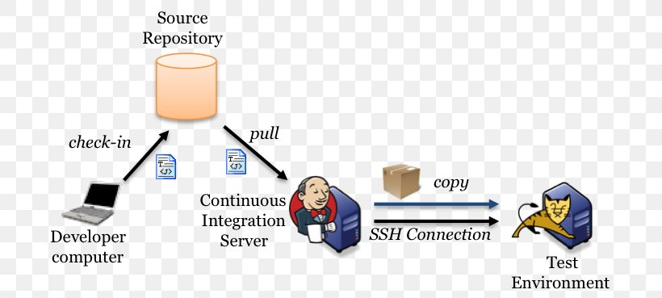
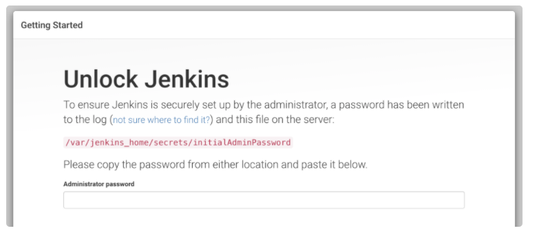
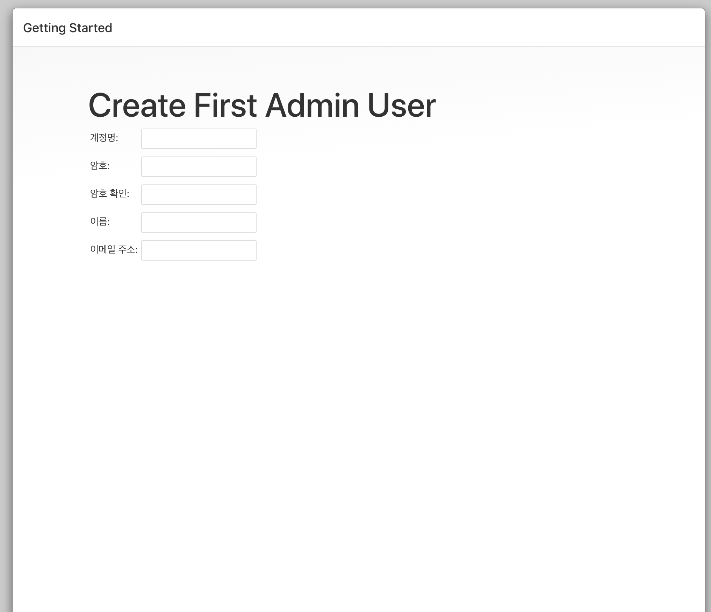
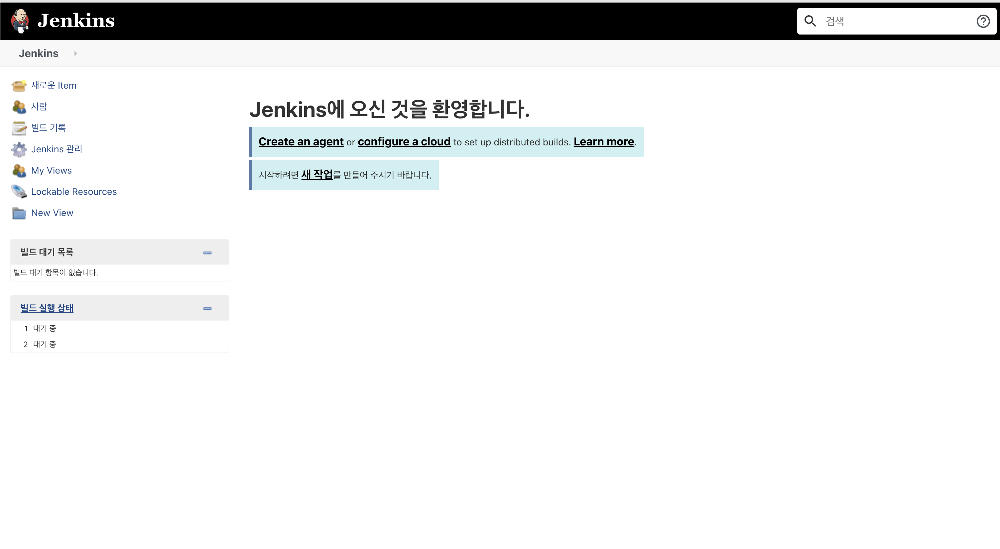

jenkins(1)-docker를 이용한 젠킨스 설치
jenkins(1) 도커를 이용하여 설치하기
젠킨스란?
- 자바 어플리케이션
- CI & CD(continuous intergration & continuous delivery)에 사용됨

docker를 이용한 자세한 다운로드는 아래 사이트를 확인하자
https://github.com/jenkinsci/docker/blob/master/README.md
도커 다운로드
#기본 설정
docker run -p 8080:8080 -p 50000:50000 jenkins/jenkins:lts
#볼륨을 컨테이너로 해서 젠킨스 관련 데이터를 /var/jenkins_home 에 저장
# 다른 컨테이너에서도 사용 가능
docker run -p 8080:8080 -p 50000:50000 -v jenkins_home:/var/jenkins_home jenkins/jenkins:lts
# 도커를 백그라운드에서 돌림
# 로그를 보고싶다면 docker logs $CONTAINER_ID
docker run -d -v jenkins_home:/var/jenkins_home -p 8080:8080 -p 50000:50000 jenkins/jenkins:lts
위를 쳐서 들어가게 되면 아래와 같이 나오는 데

비밀번호를 넣으려면 백그라운드에서 도커를 실행 중이면 로그를 찾아서 확인해도 되고 직접 도커에서 저 폴더를 확인해보면 비밀 번호를 찾을 수 있다.
docker logs $CONTAINER_ID
or
docker exec -it $CONTAINER_ID cat /var/jenkins_home/secrets/initialAdminPassword
그런 다음 localhost:8080 으로 접속한 다음 플러그인 설정을 마치게 되면 다음과 같은 화면이 나오게 된다.

어드민 유저 설정을 마치게 되면 다음과 같은 화면이 나타나게 된다!

다음에 계속...
Subscribe to changjunpyo
Get the latest posts delivered right to your inbox